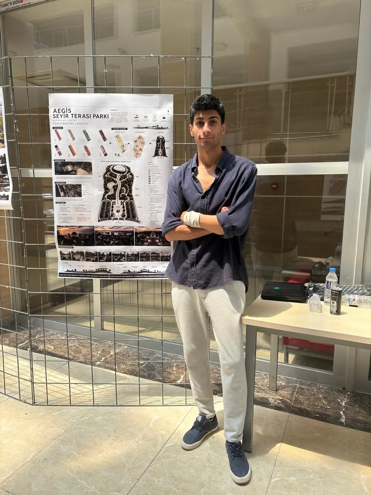
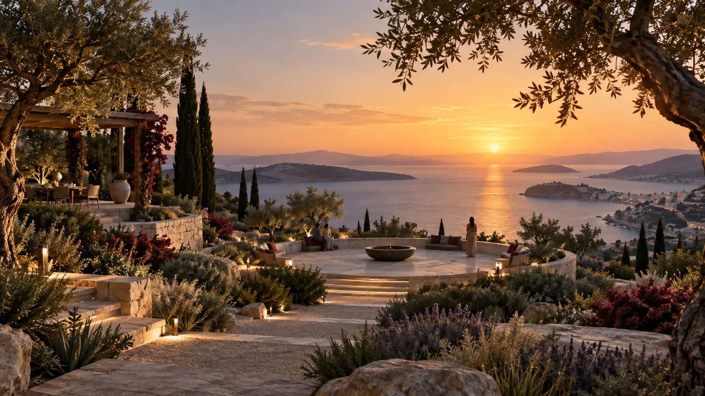

Eğitim
Hatay Mustafa Kemal Üniversitesi
Mimarlık Fakültesi
Peyzaj Mimarlığı Lisans
2022–2026
PROFİL
Peyzaj mimarlığı öğrencisi · Hatay

KISA PROFİL
Tasarlamayı, üretmeyi ve fikirleri yaşanabilir mekânlara dönüştürmeyi seviyorum.
Peyzaj mimarlığını; doğa, insan ve mekân arasında güçlü bir bağ kurma süreci olarak görüyorum. Eğitim ve tasarım sürecim boyunca farklı ölçeklerde projeler geliştirirken teknik çizim, 3D modelleme ve görselleştirme alanlarında kendimi geliştirdim.
Projelerimi inceleyinTASARIM ODAĞI
Alanın doğal ve yapısal özelliklerini dikkate alarak kullanıcı odaklı çözümler geliştirmeyi önemsiyorum.
Teknik çizim, 3D modelleme ve görselleştirme çalışmalarında edindiğim deneyimi yaratıcı tasarım anlayışıyla birleştirmeyi; farklı ölçeklerdeki peyzaj projelerinde daha güçlü, uygulanabilir ve anlaşılır çözümler üretmeyi hedefliyorum.
Hatay Mustafa Kemal Üniversitesi
Mimarlık Fakültesi
Peyzaj Mimarlığı Lisans
2022–2026
İngilizce — B1
Arapça — konuşma seviyesi
Takım çalışmasına uyum
Yaratıcı ve çözüm odaklı düşünme
Sorumluluk ve zaman yönetimi
Öğrenmeye ve gelişime açıklık
YAZILIM & ÜRETİM

DENEYİM
Peyzaj projelerinin hazırlanmasına, teknik çizim ve proje düzenleme çalışmalarına destek verdim. Bitkilendirme ve uygulama projelerinin incelenmesi ile tasarım ve görselleştirme süreçlerinde görev aldım.
İletişime geçin